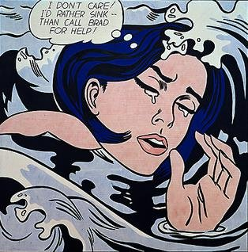

Drowning Girl
Roy Lichtenstein · 1963 · Oil and synthetic polymer paint on canvas · 171.6 × 169.5 cm · Museum of Modern Art, New York
In copyright. Look and learn: shown for study, not for download.
The picture comes from the opening page of a story called Run for Love!, drawn by Tony Abruzzo for DC Comics' Secret Hearts no. 83 in November 1962; Lichtenstein cropped both the image and the words. He was teaching at Rutgers when he painted it, and he and his first wife separated that year. It was shown at the Ferus Gallery in Los Angeles in April 1963 and at Leo Castelli in New York that autumn. The Museum of Modern Art acquired it in 1971.